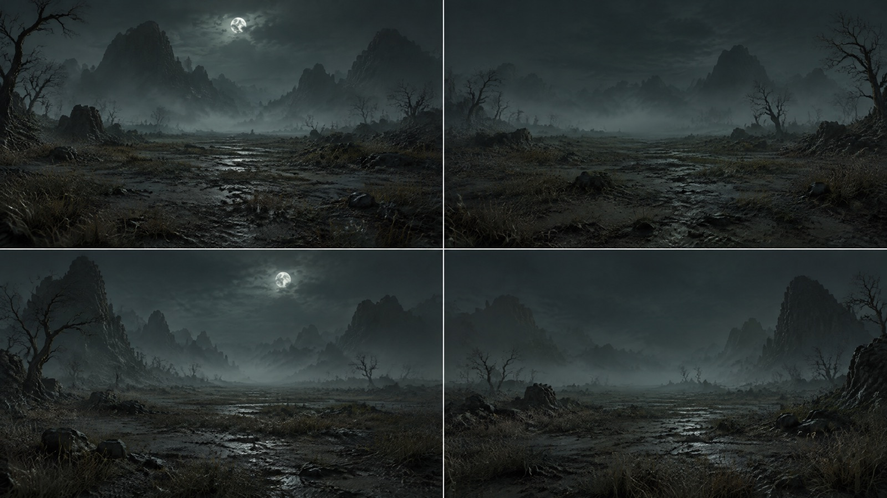
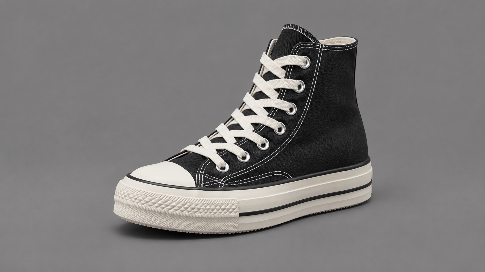
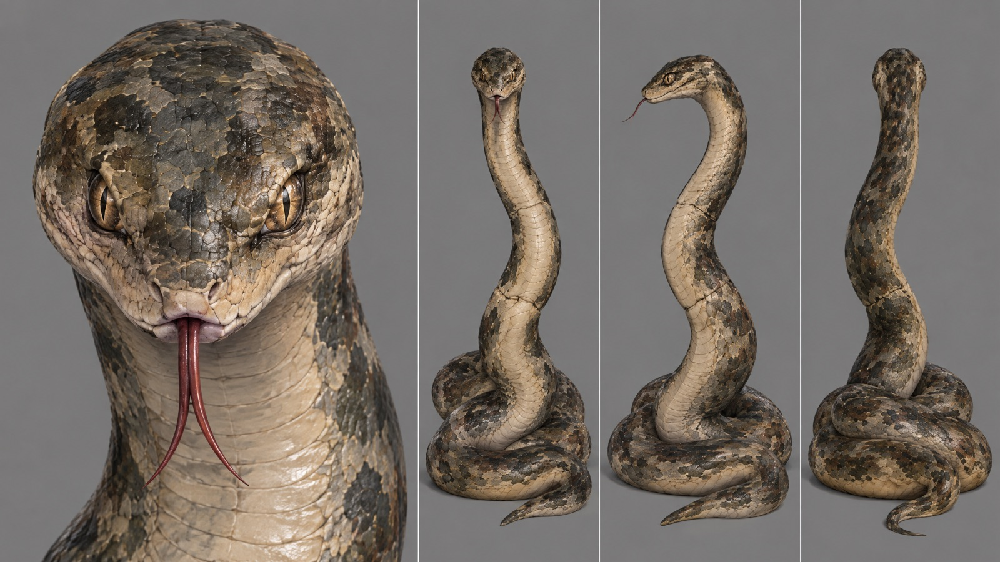
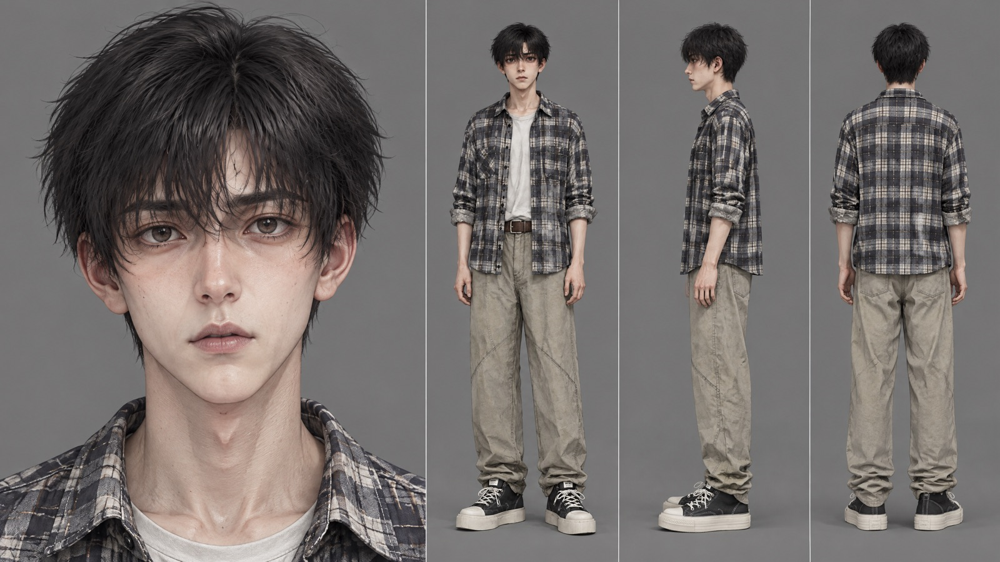
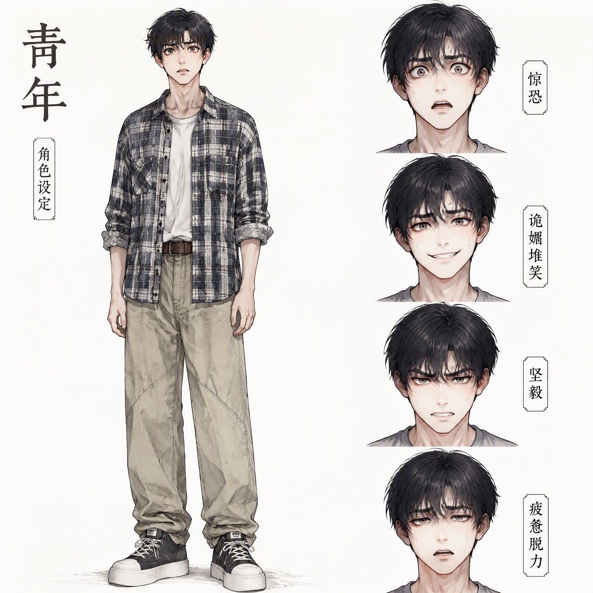
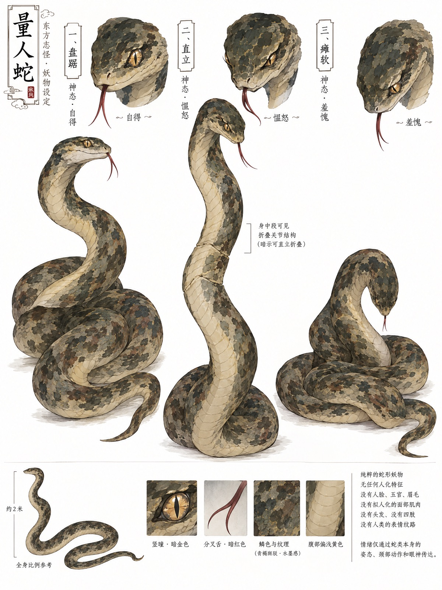
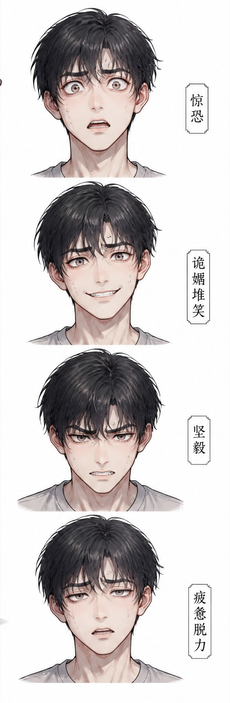

选题
量人蛇是一种喜欢和人比试的妖怪。选题是梦中循环遇量人蛇比高，属怪诞题材、东方奇幻类。
整片只有一场对话，却把「谁才算更高」这个问题反复拧开：蛇比人高，可它并不觉得自己赢了； 人怕它，可它要的从来不是赢，只是被认认真真地比一次。
剧本 · 节选
【序幕 · 立蛇】
场景：梦境。
一青年站在画面中央，脚边青色影子蠕动。一条青褐斑驳的蛇缓缓挺立而起，关节轻微舒展，
蛇身一点点拔高，最终比青年高出半个头，居高临下俯视着他。
【第一循环 · 吓呆失语】
量人蛇（吐着信子，语气幽幽，冰冷发问）：「你说……咱俩谁高？」
完整剧本共五幕，可 下载 .docx。
分镜 · 世界观与美术
- 视觉基调：新国风水墨微彩漫画。参考《哑舍》的线条感、水墨晕染边缘、低饱和岩彩上色。
- 梦境场景：无边际虚空灰白荒野，脚下薄雾弥漫，地面有枯木与焦土皲裂，冷调青灰色。
- 现实场景：现代简约单身公寓，暖金色晨光穿透百叶窗，木质地板，温暖写实。
- 分镜设计表：镜号 / 景别·运镜 / 画面内容 / 音效·台词 四列。 镜 01 为「全景 · 缓慢仰推」——虚空雾地，青褐巨蛇自地面如竹节般直立，压制青年半头。
分镜与生图用分镜表可 下载 .docx · 生图用表 .docx。
ARTWORK
角色与场景设定
点击进入灯箱查看大图。






